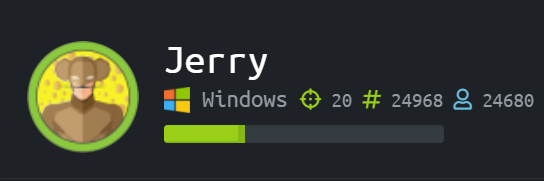
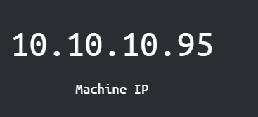
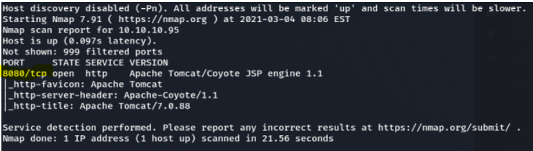
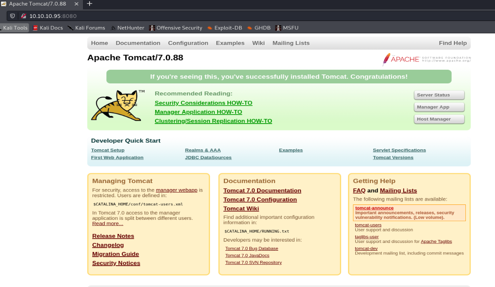

Jerry Writeup

Who am I?
Jerry is rated as an easy beginner machine 
NMAP result
From the NMAP result we see port 8080 which is HTTP we can see Apache Tomcat which is a webserver first thing to do is to try accessing it on the web browser 10.10.10.95:8080. We do get a website, it seens to be a default Apache webserver
We look through the source code and inspected elemets to find any comments for hints. Since it is a web site we tried to run dirbuster to find any hidden directories or files

We couldn't find anything with the wordlist, so we changed wordlist


Dirbuster get errors but finds some directories and files, but these are just the tomcat userguides

When clicking server status on the website we get a login window.


We tried guessing username/password, Tomcat/Tomcat.We tried admin/admin and manage to get in

In the error message we can see clues to username and passwords


username/password, tomcat/s3cret

We manage to login on the application manager site

At the buttom we can see that we are able to upload a war-file to the tomcat web server,we did some digging around and found a way to create a war-file

source: https://netsec.ws/?p=331

We then uploaded the shell.war file to the website

What we need to do now is to creat a lisner from our pc to the server using netcat

We then click the /shell on the website and we got in.

We are on the hunt for flags


we found the text file

user flag: 7004dbcef0f854e0fb401875f26ebd00
root flag: 04a8b36e1545a455393d067e772fe90e
Conclusion